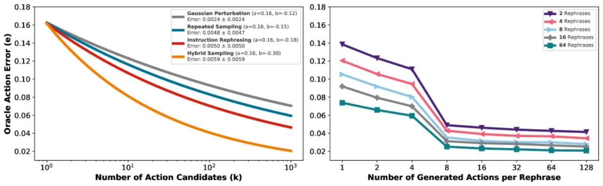
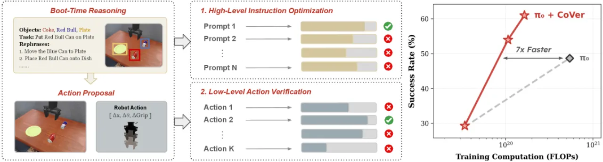
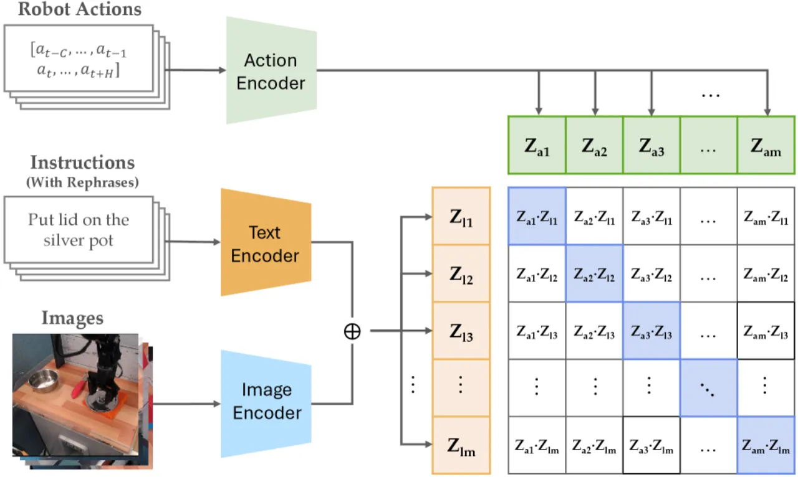
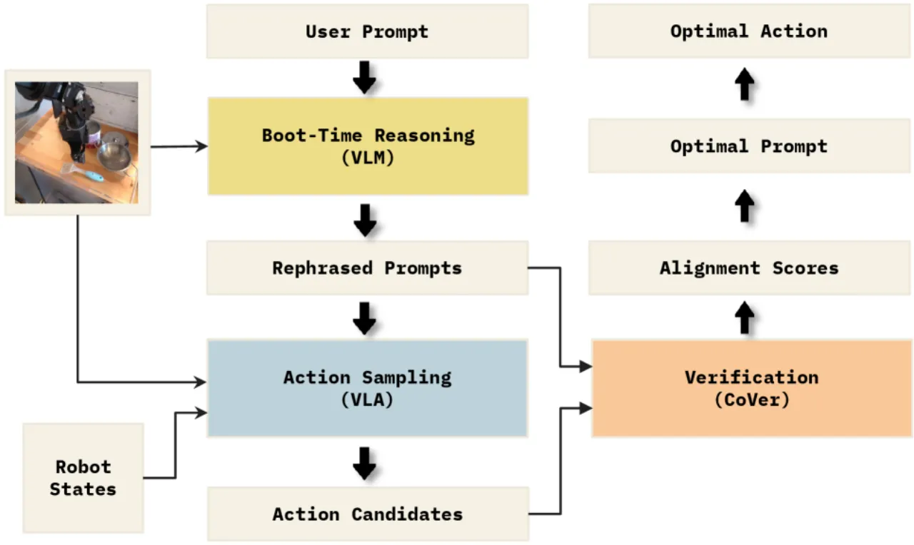
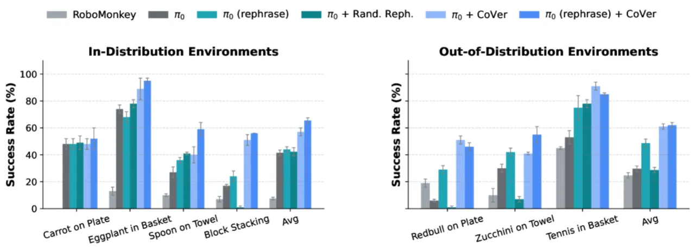
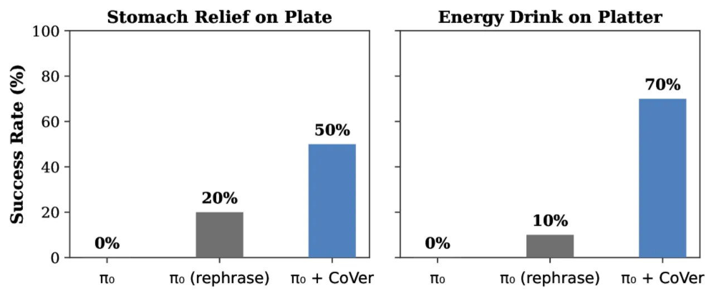
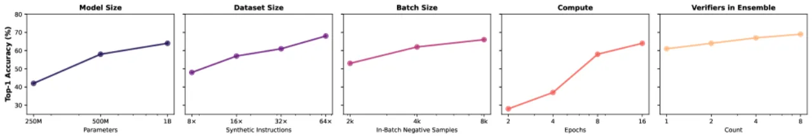
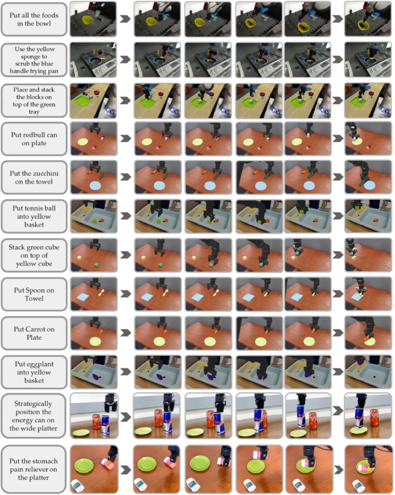

现有视觉语言动作模型（VLA）在执行机器人任务时存在严重的"intention-action gap"—— 生成的动作与自然语言指令语义不一致，导致高昂的失败代价。 本文提出 CoVer（Contrastive Verifier），一种在测试时对动作候选进行分层验证的框架， 无需修改基础策略即可显著提升指令跟随能力， 并证明测试时验证的扩展效率远优于增大策略预训练规模。
大规模预训练的 VLA（如 π0、π0.5）具备强大的操作能力，但在将自然语言指令转化为精确动作时仍频繁出现"intention-action gap"。 扩大策略预训练规模（更多数据、更大模型）虽然有效，但代价极高。 那么，能否在推理时利用额外算力来弥合这一鸿沟？
"Can we enable VLAs to leverage additional computation at test time to improve alignment between generated actions and provided language instructions?"


CoVer-VLA 将验证与策略生成解耦：基础策略（如 π0）负责生成动作， CoVer 作为独立的 1B-param contrastive verifier 在测试时对候选动作打分。 整体流程分为语言层优化和动作层优化两个阶段，并通过 Boot-Time 预计算将 VLM 延迟移至离线。

在执行前（boot-time），使用 VLM 对原始指令生成 K 个语义等价但表达多样的 rephrase， 并预计算各 rephrase 诱导的动作分布嵌入。推理时，CoVer 选择与原始指令语义最对齐的 rephrase—— 通过比较各候选 rephrase 诱导的动作分布与原始指令的余弦相似度实现。 Boot-time 预计算使 VLM 推理完全移至离线，不增加在线延迟。
对选定的 rephrase，基础策略采样 M 个动作候选（action chunk）。 CoVer 对每个候选打出对齐分数，选分最高者执行。 验证器同时接收视觉观测、语言指令和动作序列，输出一个标量分数衡量三者语义一致性。 实际部署使用 3 个 verifier 集成 以提升鲁棒性。

CoVer 的训练基于双向 InfoNCE 对比损失，使用 16× 合成指令增广（由 VLM 对同一动作轨迹生成多种表述）， 将同轨迹的不同指令表述视为正例，批内其他样本为负例，无需任何失败演示标签。 这一设计使 CoVer 能从纯成功轨迹数据中学习指令-动作的语义对齐。
实验在三个平台进行：仿真 SIMPLER 基准（域内+域外）、PolaRiS 真实机器人基准，以及 WidowX 真实机器人任务。 基础策略为 π0 和 π0.5，对比方法包括扩大策略预训练数据量、RoboMonkey 等测试时扩展基线。
| 方法 | ID Avg (%) | OOD Avg (%) |
|---|---|---|
| π0（基线） | 41.5 | 29.7 |
| π0 w/ Inst. Aug.（训练时增广） | 44.0 | 48.7 |
| π0 + CoVer（本文，无 rephrase） | 57.0 | 61.0 |
| π0 (rephrase) + CoVer（本文，完整） | 65.5 | 62.0 |
各任务细分（ID）：Carrot on Plate 52±8%，Eggplant in Basket 95±2%，Spoon on Towel 59±5%，Block Stacking 56±0%。

在 PolaRiS 基准的三项任务（PanClean、BlockStack、FoodBussing）上， π0.5 + CoVer 相比 π0.5 基线实现 13.9% 任务进度提升 和 9.3% 成功率提升。


关键消融结论：

CoVer 每时间步需采样 K×M 个动作候选并逐一打分，端到端延迟约 453ms（≈2.2Hz）。 尽管通过并行化和 boot-time 预计算缓解了部分开销，对实时高频控制场景仍构成限制。 论文指出未来工作将探索"more efficient architectures for both base policy and verifier to further reduce latency"。
方法的语言层优化依赖 VLM 在初始化阶段生成高质量的指令 rephrase。 对于 VLM 未见过的场景或极端歧义指令，rephrase 质量可能不稳定， 论文对此未做充分消融分析。
CoVer 以动作块（action chunk）而非单步动作为粒度进行验证， 可能限制对需要精细步级别纠正的任务的适用性。
CoVer 在 Bridge V2 数据集上训练，跨数据集迁移能力（如 DROID 等其他分布） 尚未充分验证。论文在 PolaRiS 等外部基准上已有正面结果，但系统性跨域评估仍缺失。